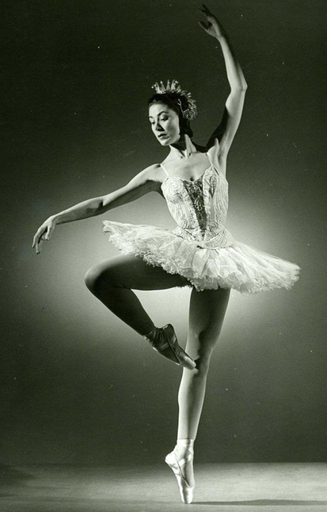

La rusa Anna Pavlova, murió el 23 de enero de 1931, a los 49 años de edad, cuando se encontraba en la cima de su carrera. En enero de 1930 realizó la última gira de su vida por Europa. Bailó en el sur de Francia, Suiza, Alemania, Dinamarca, Suecia, Noruega y finalmente en París. Había brillado sin cesar durante 32 años, desde el invierno de 1899 en que recibió su título de Bailarina de la Academia Imperial de Ballet de San Petersburgo, en el Teatro Mariinsky.
una calidad etérea y apariencia frágil, pero sana; piernas bien modeladas sin la excesiva musculatura que a algunas de ellas da el ejercicio de la danza; tobillos finos; brazos largos, perfectamente delineados, buscando siempre tocar con la punta de sus dedos la inmensidad del otro yo.
Pavlova nació de manera prematura, diminuta y débil, un 31 de enero de 1882 en San Petersburgo. Huérfana de padre, desde los dos años de edad fue una pequeña mimada por su madre y aun cuando de niña fue enfermiza se convirtió en una excelsa bailarina que muy pronto cobraría fama en todo el mundo.
Su progenitora, que tenía sangre rusa y judía, estaba preocupada por la salud de su hija, y decidió enviarla con su abuela al campo, en Ligovo. Allí Pavlova se enamoró de la naturaleza, amor que influyó después en su interpretación de “La Libélula”, “La amapola de California”, “Hojas de otoño” y otros personajes. Su vocación por la danza nació a partir del día en que su madre la llevó a ver el ballet de “La Bella Durmiente”, cuando tenía ocho años, y desde entonces no tuvo más que un anhelo: ingresar a la escuela de danza.
Cuando presentó el examen de admisión tenía apenas 10 años y su figura era muy delgada.

Por espacio de siete años estuvo sometida a un régimen intenso en esa escuela, donde no sólo resistió a todos los ejercicios, sino que adquirió la salud y el vigor que tanto necesitaba y conservó hasta el último día de existencia. Sus primeros maestros fueron Ekaterina Vazen, Pavel Guerdt, el sueco Christian Johansen y el francés Marius Petipá, entre otros.
La carrera escénica de Pavlova comenzó en el Teatro Mariinsky (Opera Imperial) representando diversos papeles.
En 1905 fue invitada a participar en una gran función benéfica y pidió a su amigo Michael Fokin que le aconsejara una pieza musical para bailar.
Fokin propuso “El cisne”, de Saint-Saens. En un momento compuso la danza y de inmediato empezaron a ensayar. Así nació el “solo” del ballet más famoso de todos los tiempos, «La Muerte del Cisne.

Ante el éxito que obtuvo, las autoridades del Mariinsky no vacilaron en dar a Pavlova el papel principal dentro de aquella obra de “El lago de los cisnes”, ballet en cuatro actos y con música de Piotr I. Tchaikovsky. Poco después se le nombró Prima ballerina.
Fue también afortunada en el amor, ya que en ese mismo año se casó con el barón Víctor Emilovith Dandre, quien en lo sucesivo organizó todas sus giras y, después de su muerte, escribió el libro que constituye la mejor biografía de Anna.
Su primera gira fue a Riga, en 1907, con Adolph Bohn, como pertenaire.
Después lo haría a Helsingfors, muy cerca de Estocolmo, Suecia, donde el rey Oscar le confirió la Orden Sueca del Mérito en Arte. Luego viajó a Copenhague, Leipizig, Praga, Berlín y Viena, donde el público colmó de flores el escenario. Años después sus viajes continuaron y llegó a conquistar el mundo entero.
Pavlova formó su propia compañía. El 28 de febrero de 1910 apareció por vez primera en el Metropolitan Opera House, de Nueva York, con el ballet “Coppelia”, llevando a Michael Mordkin como su pareja. Su triunfo fue avasallador.
En abril de ese mismo año inició una temporada en el Palace Theatre, de Londres, que duró hasta agosto. Durante los cinco años siguientes repitió una temporada anual de 15 a 20 semanas en ese mismo teatro de la capital inglesa, teniendo una retribución de mil 200 libras esterlinas como paga.
Anna Pavlova conquistó al público londinense desde la primera vez. En 1912 ella y su marido compraron una vieja casa en la parte alta de la ciudad, con un jardín frondoso, un pequeño estanque y paredes recubiertas con hiedra.
En 1913 hizo sus últimas apariciones en San Petersburgo y dejó su departamento, porque le era demasiado difícil conservar esa doble vida estando una parte del tiempo en el extranjero y la otra en Rusia. Por otro lado, acababa de firmar un contrato para realizar una larga gira por Estados Unidos y Canadá.
Terminando la gira por América del Norte, en mayo de 1914, durante el verano siguiente, Pavlova estuvo por última vez en Rusia. Al estallar la Primera Guerra Mundial (1914-18) se encontraba en Alemania y logró volver a Inglaterra, vía Bélgica. En septiembre se embarcó de nuevo a Estados Unidos para llevar a cabo otra gira.
A Pavlova le eran indiferentes los convencionalismos. Estaba dispuesta a bailar en cualquier parte, donde la gente quisiera verla, y la prueba es que llegó a actuar en el Hipódromo de Nueva York, entre elefantes amaestrados, así como coloridos y alegres titiriteros.
En Estados Unidos Pavlova tenía buenos amigos, entre ellos Mary Pickford, Douglas Fairbanks y Charlie Chaplin, quienes la persuadieron a filmar sus danzas. En la película que se conserva, tomada en 1912, puede verse su gran estilo y personalidad, así como el magnetismo que tenía con el público.
También estuvo en México, Brasil y Argentina, entre otros países de América, y al terminar la guerra volvió a su casa de Londres, reanudó sus giras por toda Europa y extendió éstas al poco tiempo por todo el mundo. Visitó India, Malasia, Japón, Egipto, Sudáfrica, Austria y Nueva Zelanda, entre otros. En enero de 1930 Anna Pavlova realizó la última gira de su vida por Europa.
Bailó en el sur de Francia, Suiza, Alemania, Dinamarca, Suecia, Noruega y finalmente en París.
La muerte cortó su carrera de artista el 23 de enero de 1931, antes de que empezara en declive. Había representado durante 25 años la muerte del cisne, sobre los escenarios más afamados del mundo.

Plisétskaya nació el 20 de noviembre de 1925, en Moscú, en una prominente familia de ascendencia judía lituana, la mayoría de cuyos miembros estaban involucrados en el teatro o el cine. Su madre, Rachel Messerer-Plisétskaya, era una actriz de cine mudo. El bailarín Asaf Messerer era su tío materno y bailarín de Bolshói. Sulamith Messerer era su tía materna. Su padre, Mijaíl Plisetski (Misha), era un diplomático, ingeniero y director de minas, y no involucrado en las artes, aunque era un fanático del ballet. Su hermano pequeño Azari Plisetsky se convirtió en un famoso bailarín y coreógrafo, y su sobrina Anna Plisétskaya también se convertiría en una bailarina.
Plisétskaya incursionó en el mundo de la danza a la edad de 3 años en la Escuela de Danza de Moscú y, a pesar de un difícil ambiente familiar (su padre Mijaíl Plisetski, fue ejecutado por orden de Stalin en 1938 y su madre, Rachel Messerer-Plisétskaya, judía, fue deportada con su hermano Azari al Gulag), destacó rápidamente en la escuela del Teatro Bolshói, bajo la influencia de sus tíos Asaf y Sulamith Messerer, bailarines de ese teatro, compañía a la que se unió Maya en 1943 y de la que se convierte en primera bailarina con solo 18 años. Comenzó su carrera profesional interpretando La muerte del cisne.
Después de años de veto, emprendió giras internacionales durante las que visitó países como Estados Unidos, Francia, Reino Unido, Italia (donde fue directora del Ballet de la Ópera de Roma), Argentina (actuó con éxito clamoroso en el Teatro Colón y en el Teatro Juan de Vera, de la ciudad de Corrientes, en 1975–1976 adonde regresó en varias oportunidades) y en España (donde dirigió la Compañía Nacional de Danza), que le permitieron conocer y colaborar con grandes personalidades y obtener reconocimiento internacional en los más importantes teatros.
Se atrevió a romper la rutina soviética incorporando danza moderna y trabajando con los coreógrafos Alberto Alonso (en:Alberto Alonso), Maurice Béjart y Roland Petit, que crearon varias piezas para ella como «Carmen», «Isadora» y «La rose malade».

En conmemoración de sus 80 años se celebró en Moscú una semana de actividades.
Principales interpretaciones
de un soberbio port-des-bras, su interpretación del doble rol de Odette–Odile5 en El lago de los cisnes así como de la Muerte del cisne son vistas por algunos como «definitivas». Ha sido una incomparable intérprete de Kitri en Don Quijote, La noche de Valpurgis y Raymonda. En cambio, fueron muy esporádicas sus actuaciones como Giselle y Aurora de La bella durmiente.

Una de las pioneras de la danza moderna en Rusia fue aclamada en el ballet Carmen Suite con coreografía del cubano Alberto Alonso, hermano de Fernando Alonso, y en la coreografía de Maurice Béjart del Bolero de Ravel67 de Ravel.
De muy pequeña inició, sus estudios de danza clásica, comenzando en Shanghái y continuando posteriormente en Londres; a la corta edad de 14 años realizó una audición con el «Vic-Wells Ballet», donde hizo su debut en 1934 bailando unos de los copos de nieve del ballet El Cascanueces. Para 1939, ya había interpretado muchos de los roles principales de los ballets clásicos: Aurora, en La bella durmiente; Giselle, en Giselle, y el difícil rol Odette/Odile de El lago de los cisnes. El coreógrafo inglés Sir Frederick Ashton creó varios ballets especialmente para ella, la consideró una de sus musas, y su relación duró 25 años.
La carrera de Fonteyn continuó en ascenso y ya hacia el final de 1950 había interpretado casi todos los roles principales de los ballets clásicos. Durante los años 1940, Fonteyn mantuvo una larga relación con el compositor británico Constant Lambert, con quien no llegó a casarse. En 1956 se casa con Roberto Arias, diplomático y playboy panameño, y su vida se dividió entre bailar y cumplir los roles de la esposa de un embajador.
Durante su longeva carrera fueron muchos los partenaires con los que compartió escena alrededor de todo el mundo.
En 1940, forma pareja artística junto con Robert Helpmann, con una pareja artística de renombre durante los años posteriores. En 1950, establece como pareja artística a Michael Somes protagonizando el primer ballet televisado en la televisión británica, La bella durmiente.
La carrera artística de Fonteyn llega a su cumbre cuando las personalidades del momento pensaban que debía retirarse. No obstante, cuando en 1961 Rudolf Nuréyev escapó de la URSS, la coreógrafa Ninette de Valois lo invitó a bailar en Londres como partenaire de Fonteyn, quien ya había sido consagrada estrella del Royal Ballet de Londres. Aunque a priori no se le auguraba demasiado futuro a esta alianza, fundamentalmente debido a los cuarenta y tres años de edad de Fonteyn y a que tenía intención de retirarse definitivamente de la profesión, persistió con éxito.
A lo largo de varios años de actuaciones, la pareja Fonteyn/Nuréyev fue la más famosa pareja de danza en la historia del ballet clásico.
Era tan grande la pasión que despertaban en el público las actuaciones de la pareja formada por Fonteyn y Nuréyev que esta llegaba a provocar hechos insólitos en sus actuaciones, como por ejemplo que durante una función en Viena fueran llamados ochenta y nueve veces a escena para saludar al público presente en la sala, que vibraba de emoción y entusiasmo.

La bailarina y coreógrafa Ninette de Valois que también tenía una escuela de Danza donde Fonteyn aprendía y perfeccionaba sus conocimientos. Fue la musa inspiradora de esta última. Fonteyn consideraba a Valois como una mujer impredecible y maravillosa y una excepcional bailarina que despertaba en ella -aún más- su amor por la danza.
Retiro y fallecimiento
Fonteyn se retiró en 1970, pasados los 50 años de edad (lo que era toda una hazaña para una bailarina con tanta continuidad en la actuación y con tanta desenvoltura y agilidad, que sorprendía notablemente tanto a su público como a los críticos en la materia). A partir de entonces, se instaló definitivamente en Panamá.después del fallecimiento de su esposo, se trasladó a una quinta -denominada La quinta pata-, que ella consideraba su paraíso personal.
fallecio a los 71 años de edad, debido al cáncer.
Premios y reconocimientos

Alessandra Ferri es una bailarina italiana nacida en Milán en 1963. Considerada la más grande bailarina italiana desde Carla Fracci. Estudió danza en La Scala y desde los 15 años en Londres en el Royal Ballet School. Ganó el Prix de Lausanne en 1980 uniéndose al Royal Ballet en 1981. Con la compañía creó roles en L'Invitation au voyage, Valley of Shadows, Isadora, Consort Lessons, Different Drummer y Chanson. Su repertorio incluyó Illuminations, Return to the Strange Land, The Sleeping Beauty, Afternoon of a Faun, The Two Pigeons, El lago de los cisnes, Mayerling, Manon y Juliet en Romeo and Juliet, Voluntaries, Konservatoriet, Cinderella, La Bayadère y Les Biches. Trabajó mucho con el coreógrafo Kenneth MacMillan y con Roland Petit. En 1985 se unió al American Ballet Theatre donde realizó una importante parte de su carrera junto a sus partenaires Julio Bocca y Roberto Bolle de La Scala a quien invitó para sus funciones de despedida en el ABT como Julieta. También bailó con Rudolf Nuréyev (1988), Mikhail Baryshnikov, Anthony Dowell, Patrick Dupond, Peter Schaufuss, Maximiliano Guerra, Laurent Hilaire, Angel Corella y Manuel Legris. Se retiró en junio de 2007. Tiene dos hijos con el fotógrafo italiano Fabrizio Ferri. En 1982 ganó el Olivier Award y en 2005 fue condecorada Cavaliere della Repubblica Italiana.
DEL BALLET DE FAMA INTERNACIONAL
el Teatro de la Scala de Milán, como lugar clave en la trayectoria de esta bailarina. En él empezó Alesandra Ferri sus estudios de ballet y en él, años más tarde y con una carrera a sus espaldas, destaca como primera bailarina y estrella internacional. Contiene la bailarina una andadura cargada de nombres propios. De escuelas, como la del Royal Ballet de Londres; de compañías, como el American Ballet Theatre, el Ballet de la Ópera de París y el Royal Ballet también, y de grandes coreógrafos. Fue el prestigioso Kenneth MacMillan de los primeros en confiar en Alexandra Ferri cuando la eligió en 1983 para protagonizar varios de sus trabajos. Romeo y Julieta, Manon, Mayerling, y los que creó especialmente para ella, A different drummer y Valley of shadow, algunos de ellos. También Roland Petit la invitó a la Ópera de París para bailar su obra Carmen y Mikhail Baryshnikov, le propuso personalmente formar parte del ABT cuando lo dirigía. Allí permaneció Alesandra Ferri desde 1985 hasta 1990, y en la afamada compañía americana interpretó principales papeles en míticos montajes. Anastasia, Giselle, El lago de los cisnes y La Sílfide, entre ellas. Compañera de baile durante muchos años del bailarín Julio Bocca, de quienes se recuerda especialmente su trabajo conjunto en el montaje Manon, Alesandra Ferri firma destacadas interpretaciones del ballet clásico.

UN MOMENTO ETERNO
Después de su retiro en 2007, Alessandra permaneció seis años sin bailar. Volvió en 2013 con compromisos escénicos teñidos de teatro, como su pieza autobiográfica The Piano Upstairs o el Chéri que trajo incluso al Maipo porteño, ya en dúo con Herman Cornejo. El año pasado ambos hicieron una gira por el interior de Italia con Trio Concert Dance y después ella viajó a Londres para bailar una pieza de Wayne McGregor, Woolf Works, con la que se iba enfrentando, de nuevo, con compromisos técnicos. Por fin, surgió el impulso por retomar la misma Julieta con la que se había despedido. Como si se tratara de una gestación biológica, disponía de nueve meses para consumar su objetivo: volver a bailar en el MET con la que había sido su compañía en un personaje emblemático. Y lo hizo, con Herman Cornejo en el rol de Romeo.

fuentes